Magnifica Humanitas · 2026
人类，站在岔路口Humanity at the Crossroads
- 技术正在加速。人的方向感却没有同步更新。Technology is accelerating. Our moral compass is not.
- 真正的问题不是：机器能做什么？The real question is not what machines can do.
- 而是：我们要成为什么样的人？It is who we choose to become.
Magnifica Humanitas · 2026
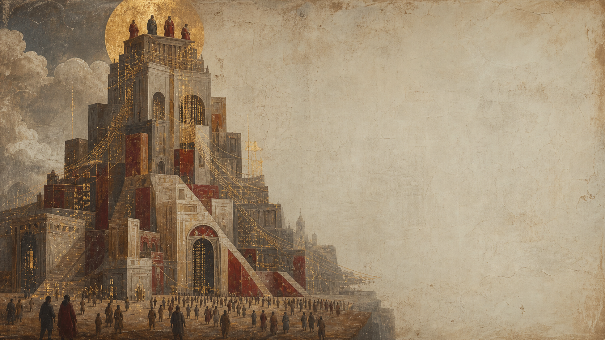
01 · The New Babel
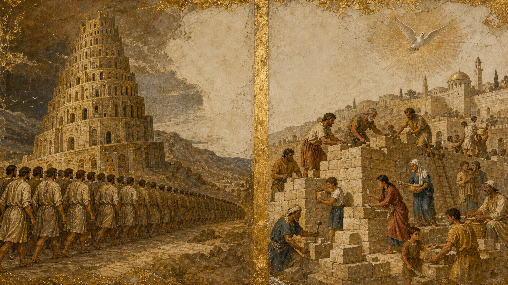
02 · Two Cities
文明的高度，不由塔尖决定。
A civilization is not measured by its tallest tower.
而由谁被允许留在城中决定。
It is measured by who is welcomed inside.
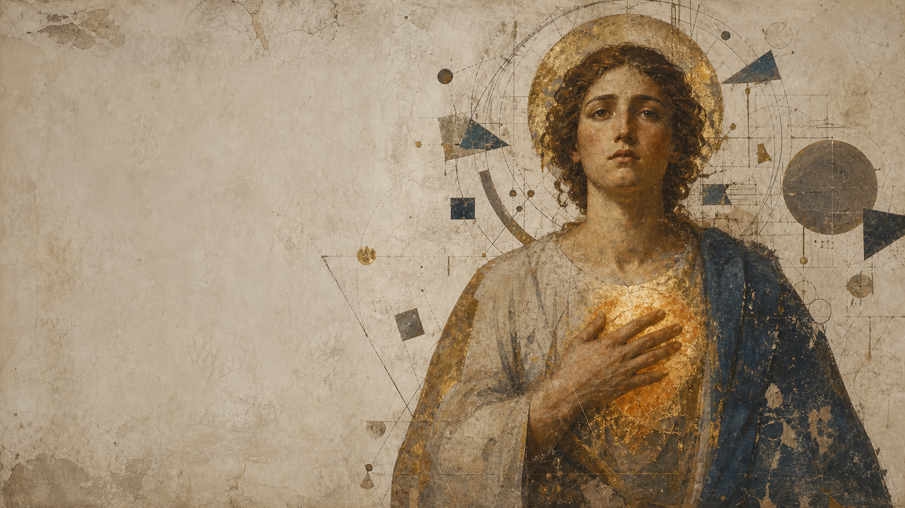
03 · Irreducible Dignity
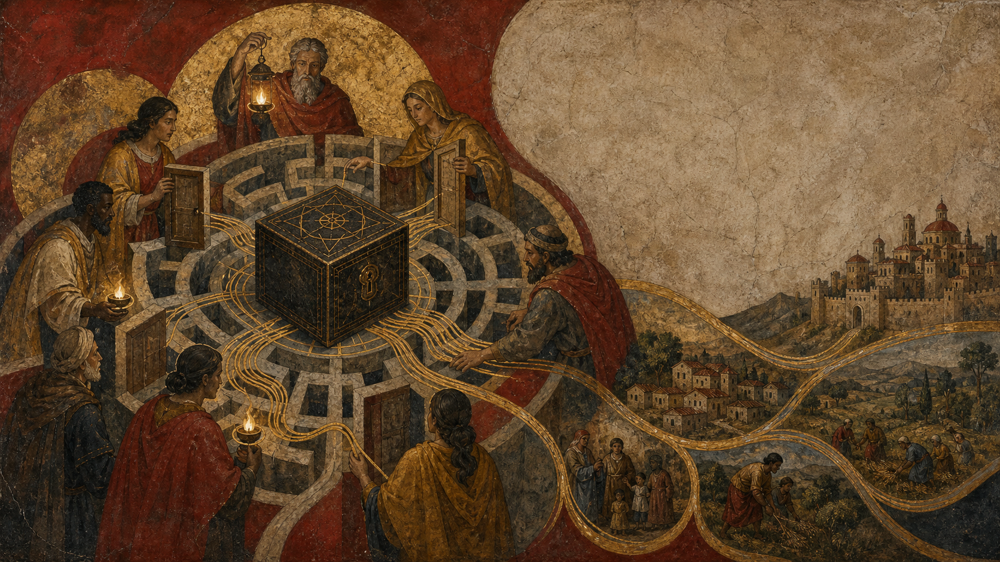
04 · Accountability
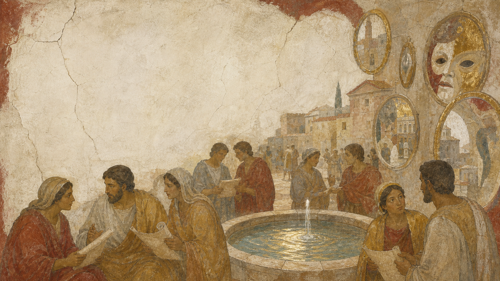
05 · Truth
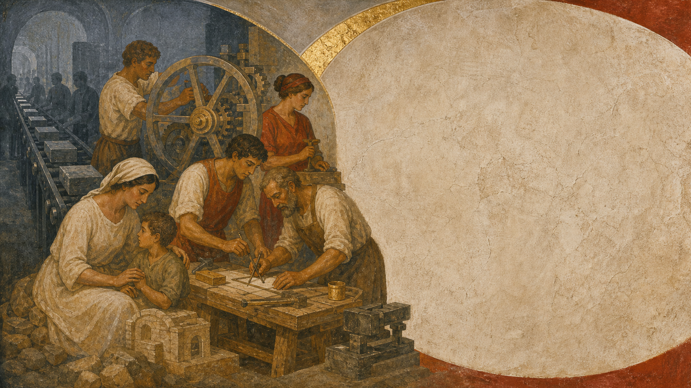
06 · Work
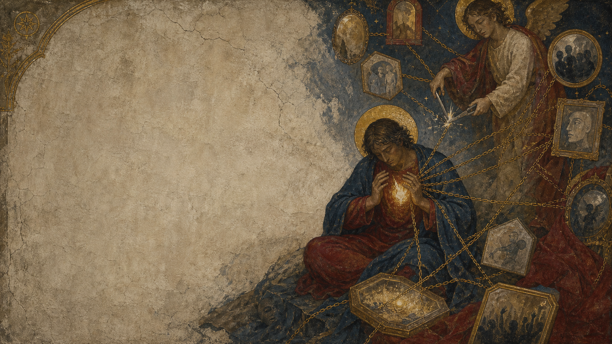
07 · Freedom
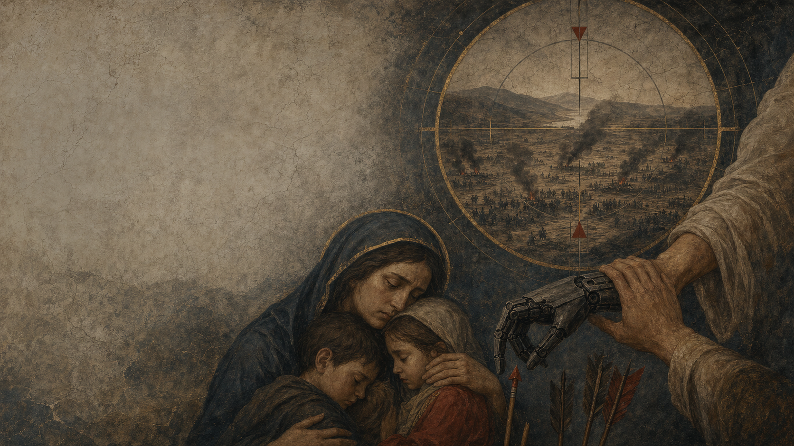
08 · War
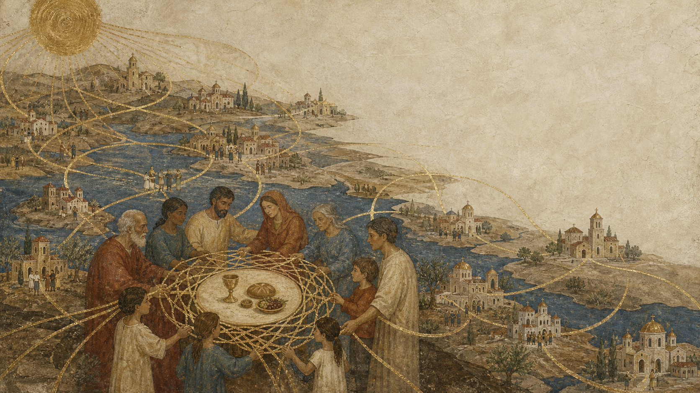
09 · Encounter
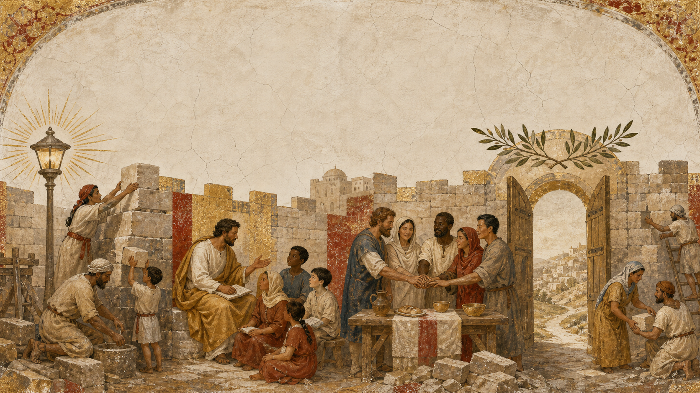
10 · Rebuilding
Truth
Protect our capacity to judge together.
Education
Cultivate discernment, not only skills.
Relationships
Turn proximity into encounter.
Peace
Make technology serve justice.
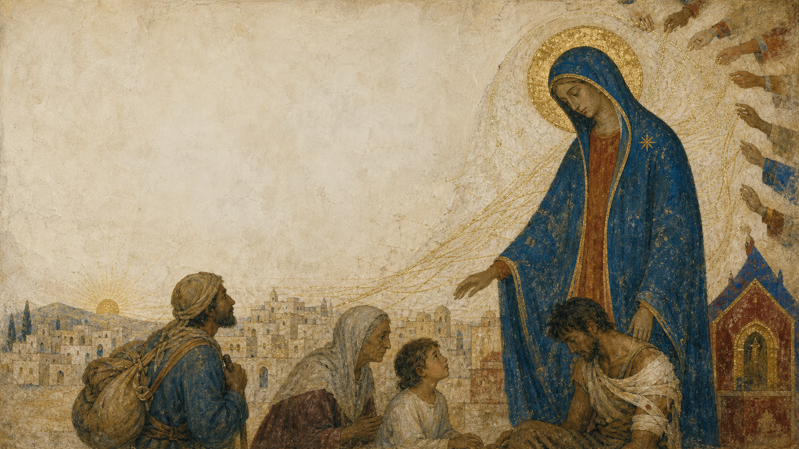
11 · Hope from Below